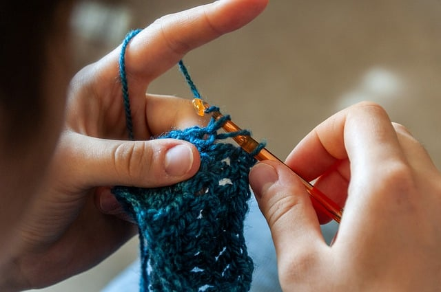
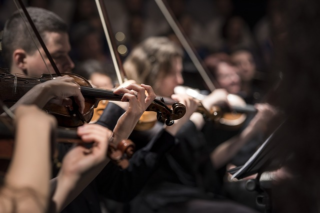

11 Nov: Virk-cirkel på biblioteket

16 Nov: Orkester på Kulturskolan

30 Nov: Höstbio för de små
Det händer mycket i Tucaryds kommun.
Här hittar du kommande evenemang - kulturarrangemang, konserter, idrottsevent,
barnaktiviteter och allt annat roligt som är på gång.

11 Nov: Virk-cirkel på biblioteket
16 Nov: Orkester på Kulturskolan
30 Nov: Höstbio för de små